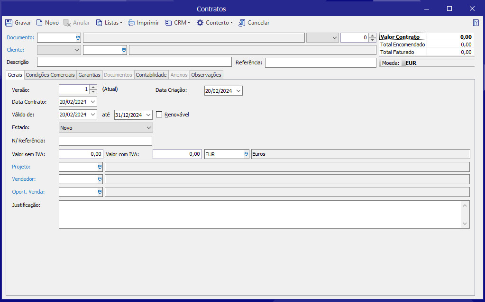

Criar contratosX
Um contrato de Compra ou Venda, associado a um Cliente/Outro Devedor ou a um Fornecedor/Outro Credor, permite definir as várias condições de fornecimento de Produtos ou Serviços, caso se trate de um contrato de venda ou de aquisição de Produtos/Serviços, caso se trate de um contrato de compra.
Podem ser definidas as características seguintes:
- Validade: configura-se um período para o qual o contrato é válido;
- Estado: define o estado atual em que se encontra o Contrato (Novo, Orçamentado, Recusado, Ativo-Faturação Ativa, Ativo-Faturação Suspensa);
- Condições Comerciais: tais como a moeda, modo e condições de pagamento, descontos;
- Contabilização: a forma como um contrato é contabilizado, nomeadamente o projeto, a conta, o centro de custos, etc.;
- Garantias contratuais associadas ao contrato: estas podem ser obrigatórias ou facultativas.
Para criar um contrato, siga os seguintes passos:
- Aceder a Serviços | Contratos | Contratos;
- Indicar o Documento e a Série que definem o contrato;
- Identificar a referência do contrato;
- Identificar a Entidade associada ao contrato;
- No separador Gerais, definir os critérios de validade do
contrato:
- Período: intervalo de datas de validade do contrato;
- Renovável: indica se o contrato deve ser renovável; - Definir o valor do contrato, bem como a moeda do mesmo;
- Se o contrato está associado a um projeto, é possível fazer essa associação;
- Para contratos de venda, indicar o responsável pelo contrato (vendedor), bem como a oportunidade de venda que lhe deu origem;
- No separador Condições Comercias, definir as mesmas;
- No separador Contabilidade, definir as regras que vão ser depois copiadas para os documentos;
- No separador Observações, inserir informações adicionais ao contrato;
- No separador Garantias, associar as garantias aplicáveis ao
contrato;
Nota: Poderá adicionar o valor da garantia; - No separador CCP, definir os dados referentes ao Código de Contrato Público associado ao contrato
- Por fim, clicar em Gravar.
